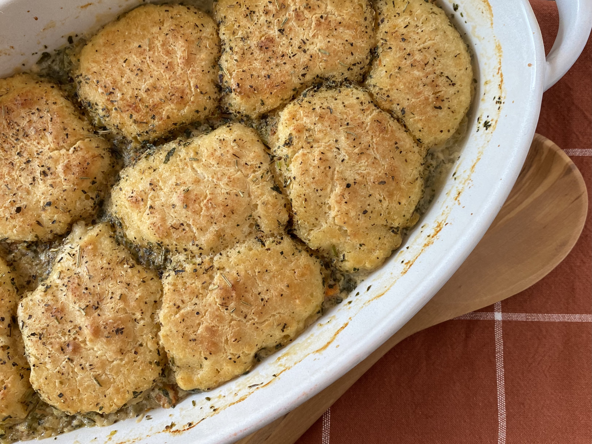

Comforting Turkey Cobbler

This takes the best of a pot pie and becomes a cobbler.
The rustic look of the topping ensures you don't have to
worry about shaping a pie pastry. The vegetables can be
changed if desired.
Ingredients
- 1 tablespoon butter
- 1 tablespoon all-purpose flour
- 1 cup water
- 1/2 cup milk
- 1 teaspoon garlic base
- 2 cups cubed cooked turkey
- 1/2 cup chopped carrots
- 1/2 cup chopped celery
- 1/4 cup chopped onion
- 1/4 teaspoon dried oregano
- salt and ground black pepper to taste
Recipe steps
- Melt 1 tablespoon butter in a saucepan over medium heat. Whisk in 1 tablespoon flour to create a paste. Slowly add in water, stirring to incorporate. Stir in 1/2 cup milk and garlic base until mixture begins to bubble. Add turkey, carrots, celery, and onion and heat until warm, about 5 minutes. Mix in oregano, thyme, parsley, salt, and pepper. Remove from the heat and set aside.
- Preheat the oven to 375 degrees F (190 degrees C). Spray an 8x6-inch casserole dish with cooking spray.
- Preheat the oven to 375 degrees F (190 degrees C). Spray an 8x6-inch casserole dish with cooking spray.
- Pour turkey filling into the prepared casserole dish. Drop cobbler topping on top and sprinkle with Italian seasoning and garlic granules.
- Bake in the preheated oven until cobbler topping is golden brown, about 25 minutes.